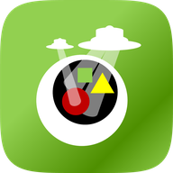

비빔 BeBeam
Beam으로 전송하는 Webapp Launcher
- 내가 만든 웹앱을 스마트폰에서 비벼요.
- 와이파이 없이 친구에게 전송하고 함께 비벼요.
- 서버에 올리고, 앱스토어 등록 없이 바로 비벼요.
- 한 번에 여러 명에게 비빔을 쏘고 비벼요.
index.html + JavaScript, CSS로 만든 모든 앱
처음이라면, 눌러 보며 익혀요
AI에게 이 프롬프트를 붙여 넣고 앱을 만들어 보세요
주소만 필요하면

Beam으로 전송하는 Webapp Launcher
index.html + JavaScript, CSS로 만든 모든 앱
처음이라면, 눌러 보며 익혀요
AI에게 이 프롬프트를 붙여 넣고 앱을 만들어 보세요
주소만 필요하면